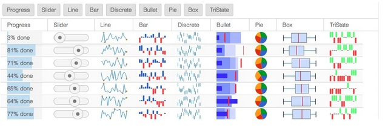

The Ext.Widget class, or just “widget”, is a lightweight class similar to Component, but consists solely of an Ext.dom.Element and associated listeners. This makes a Widget quite different from a normal Component because the Ext.Widget class does not derive from Ext.Component. Component provides robust life-cycle management, which adds a tremendous amount of functionality. This functionality, however, comes at some cost.
We have provided a few stock Widgets with Ext JS 5+. These include:
- Progress Bar (Ext.ProgressBarWidget or “progressbarwidget”)
- Slider (Ext.slider.Widget or “sliderwidget”)
- Sparklines (Ext.sparkline.*)
In this guide we will cover how to use and create Widgets. We will also explore our newest creation, the Widget Column.
Using Widgets
As with normal Components, Widgets can be added to the items of a Container. For example, we can add a Sparkline to a toolbar:
var panel = Ext.create({
xtype: 'panel',
title: 'Title',
frame: true,
renderTo: document.body,
width: 250,
height: 150,
html: 'Some text',
tbar: [{
text: 'Button'
}, '->', {
xtype: 'sparklineline',
fillColor: '#ddf',
width: 100,
height: 20,
values: [2, 3, 0, 4, -1]
}]
});In the case of Sparklines, you must provide a size (both width and height) or use an Ext JS layout manager to do so. This is because the internal drawings have no natural size.
The Widget Column
One of the more sought after bits of functionality in Ext JS has always been to easily add Components to a Grid. If this is something you’ve always wanted to do, then say hello to the Widget Column!
Widget Column allows you to easily render any Component or Widget into a Grid cell. Adding a Widget Column couldn’t be easier. Simply assign your column an xtype of “widgetcolumn” and specify its widget config. The widget config is an object that contains the xtype to create for each cell. This xtype can refer to any Ext.Widget or Ext.Component class.
Using the Widget Column to add Sparkline widgets to a Grid, you can accomplish an impressive amount of data visualization as you can see below.

For a live example of the above image, please visit the [Kitchen Sink](Paging Grid).
Enough talk, let’s see this thing in action. In the following example, we create a store with a small set of records that populates a Grid with a Widget Column.
The Widget Column contains a Progress Bar widget, which is added to each row.
var store = Ext.create('Ext.data.Store', {
fields: ['name','progress'],
data: [
{ name: 'Test 1', progress: 0.10 },
{ name: 'Test 2', progress: 0.23 },
{ name: 'Test 3', progress: 0.86 },
{ name: 'Test 4', progress: 0.31 }
]
});
Ext.create({
xtype: 'grid',
title: 'Widget Column Demo',
store: store,
columns: [{
text: 'Test Number',
dataIndex: 'name',
width: 100
}, {
xtype: 'widgetcolumn',
text: 'Progress',
width: 120,
dataIndex: 'progress',
widget: {
xtype: 'progressbarwidget',
textTpl: '{value:percent}'
}
}],
width: 220,
height: 250,
renderTo: document.body
});Understanding the “widget” Config
The widget config of a Widget Column is used to create multiple instances of the Widget. Based on the xtype contained in the widget config, the Widget Column will create an object that is either derived from Ext.Widget or from Ext.Component. This config cannot be an instance already because Widget Column needs one instance per rendered cell.
While the widget config is used to create multiple instances of the desired Component or Widget, each instance must be connected with a specific record and row in the Grid. Over the lifetime of the Grid, the Widgets created for a row will be “recycled” and connected to different records and rows.
Use Buffered Rendering
Widgets are lighter weight than Components and using the progressbar or slider Widget can make your Grid more responsive. But, if the Grid has more than a handful of rows having a Component or Widget per row could make for a slugish rendering and scrolling experience. Fortunately, the Grid uses bufferedRendering by default. The bufferedrenderer creates a fixed number of Components or Widgets. Those items are then recycled from un-rendered rows and added to newly created rows.
Custom Widgets
While Ext JS 5 ships with a “widget-ized” version of the Slider and Progressbar as well as the new Sparklines, there will most likely be situations in which you’d like to create your own Widgets. The decision of whether to derive from Ext.Component vs Ext.Widget really comes down to the complexity of the class being created.
Simple componentry can often avoid things like the Component life-cycle and layouts and just map config properties to the associated elements while responding to element events (_like ‘click’, ‘dblclick’, ‘mouseover’, etc._).
To create a Widget you extend Ext.Widget and define your element template and its listeners.
Ext.define('MyWidget', {
extend: 'Ext.Widget',
// The element template - passed to Ext.Element.create()
element: {
reference: 'element',
listeners: {
click: 'onClick'
},
children: [{
reference: 'innerElement',
listeners: {
click: 'onInnerClick'
}
}]
},
constructor: function(config) {
// Initializes our element from the template, and calls initConfig().
this.callParent([config]);
// After calling the superclass constructor, the Element is available and
// can safely be manipulated. Reference Elements are instances of
// Ext.Element, and are cached on each Widget instance by reference name.
},
onClick: function() {
// Listeners use this Widget instance as their scope
console.log('element clicked', this);
},
onInnerClick: function() {
// Access the innerElement reference by name
console.log('inner element clicked', this.innerElement);
}
});This will feel very familiar to those who have written a Sencha Touch Component. That is because Ext.Widget is an enhanced version of Ext.AbstractComponent from Sencha Touch. The ability to add listeners to the element template is one of those enhancements, but there are a handful of others. Refer to the documentation on Ext.Widget for more details.